HAM FAIR 2001

パシフィコ横浜の"シンボル" 帆船「日本丸」
2001年 アマチュア無線フェスティバル IN パシフィコ横浜
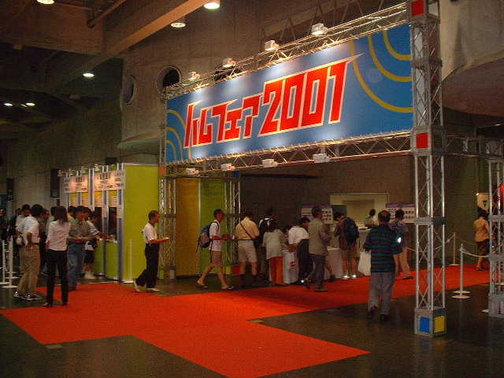
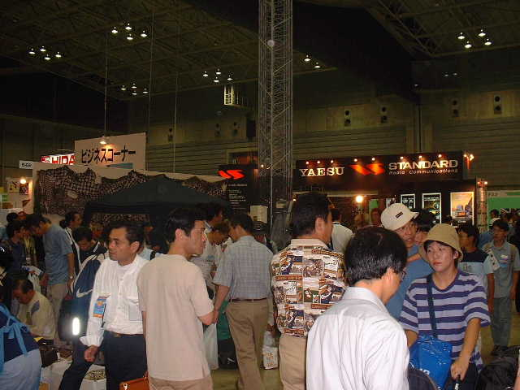
結構賑わっていた初日の会場

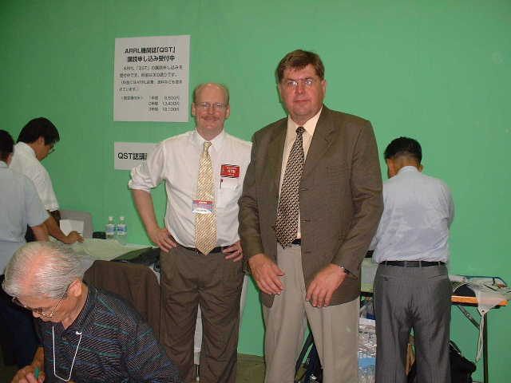
賑わうDXCCのフィールドチェック。6mの"常連"の顔が目立った
右の写真は、来日したARRLのNT1N(左)。右はお馴染みのOH2BH
パシフィコ横浜の"シンボル" 帆船「日本丸」



| 2日目のイベントコーナーでは、去る2月に行われたD68C (コモロ)のDXpeditionの模様が、 90枚のスライドを交えながらJA1RJU、JA3AER、PE9PEから報告された。 |
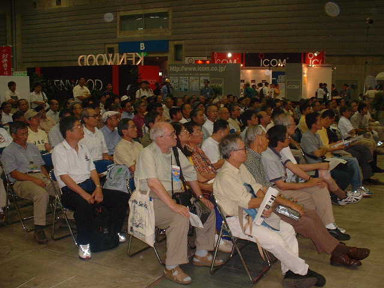
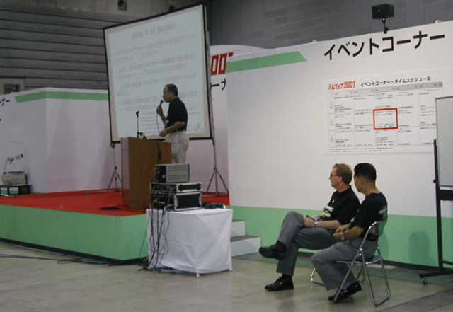
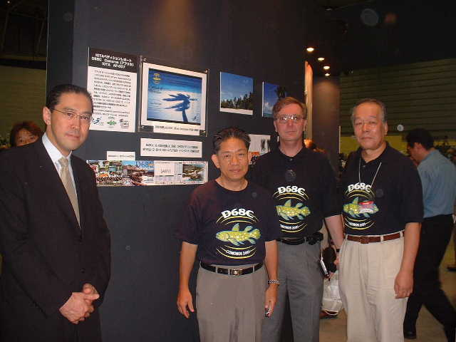
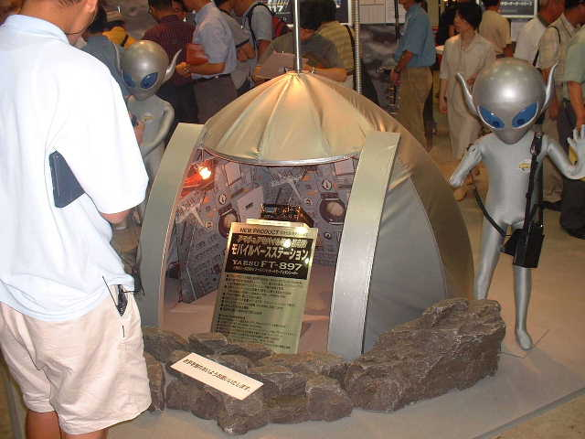
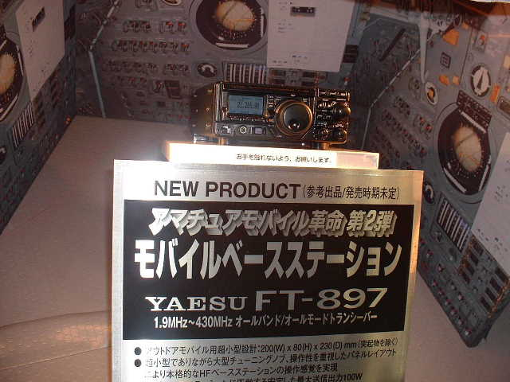
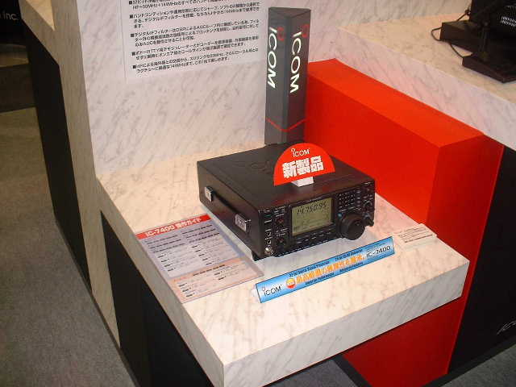
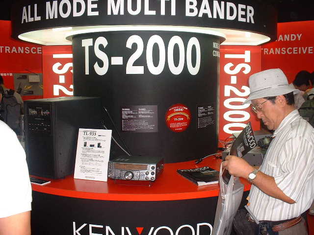
|
◎ MARK-V FT-1000MP FTV-1000 50MHzトランスバーター、受信体験会 昨年のハムフェアで発表され"6mファン"の注目を集めた、YAESUの50MHzトランスバーター FTV-1000の受信体験会が、 パシフィコ横浜裏の特設会場で開催された。 FTV-1000は、当初MARK-V FT-1000MP専用とFOして売り出されたが、今回改造キットを購入する事によって、 FT-1000MPやFT-1000/FT-1021にも接続して使える様になった。 FT-1000/FT-1021を親機にする場合、FTV-1000への電源供給は親機から行えるため、トランスバータ専用電源FP-29は必要なく、 価格はFTV-1000(\110,000)+接続ケーブル+改造費用一式の合計\170,000(消費税・送料・整備が生じた場合の整備費は別)となる。 FT-1000MPを親機にする場合は、FTV-1000(\110,000)+専用電源FP-29(\60.000)+改造キットFRB-5(\5,000)の合計\175,000(消費税・取付費・送料別)となる。 FT-1000/FT-1021を親機にする場合は、本体の改造が大掛かりになるため、専用電源FP-29が必要ないとは言え、FT-1000MPより"割高"となっている。 改造申し込み、問合せはWDXC(0120-86-4901)まで。 |
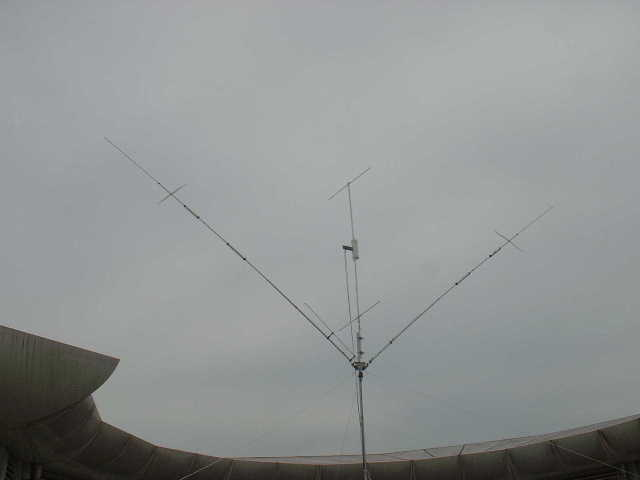
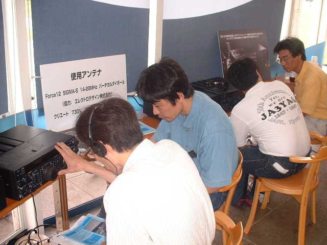
Ham Fair 2004
Ham Fair 2003
Ham Fair 2002
Ham Fair 2001
Ham Fair 2000
Ham Fair 1999
|
[ハムフェアの歴史] ハム・フェアの前身「第1回全日本ハムベンション」が1975年(昭和50年)、静岡県富士宮市で開催された。 会場は富士の裾野に広がる朝霧高原のグリンパーク。 1976年の第2回では特別記念局の8J2HAMも開局、交通の便は良くないものの自然を満喫出来る会場は多くの来場者で賑わった。 この実績を基礎に、1977年(昭和52年)「全日本ハムベンション」を引き継ぐ形で「第1回アマチュア無線フェスティバル」(ハムフェア)が、 JARLの主催で東京都中央区晴海の東京貿易センターで開催される事になった。 第1回は9月23日から25日までの開催期間にも関わらず、初日から多くの入場者がつめかけた。 フェスティバルの特別記念局・8J1HAMも開設、多くの来場者が運用した。 |
 |
Flash ! Newsへ |